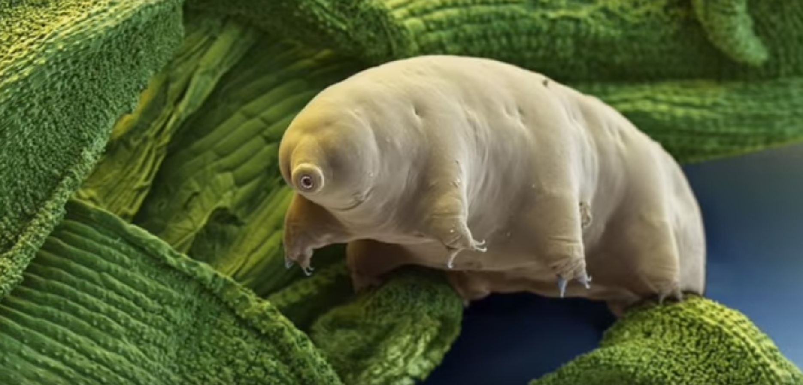

Ученые обнаружили животных, которые выживают и не стареют в морозильнике

Животных замораживали до -30 градусов Цельсия в течение недели,
после чего медленно размораживали еще на семь дней и кормили.
Такие циклы повторяли до тех пор, пока все животные не погибали от старости.
Пингвины Адели Восточной Антарктиды наполовину вымерли из-за глобального потепления

Долгосрочный мониторинг показал, что за десять лет количество птиц,
гнездящихся на 52 островах вблизи исследовательской станции Моусон, уменьшилось на 43%.
Биологи обнаружили, что у золотых рыбок отличная память на расстояние
Биологи Оксфордского университета доказали, что золотые рыбки отлично
ориентируются в окружающей среде.
Эксперимент был проведен в вытянутом аквариуме с преградами.
Ученые нашли вещество в крови, которое связано с началом деменции

В исследовании, которое продлилось восемь лет, принял участие 631 человек со
средним возрастом 79 лет. Исследователи обнаружили, что более высокие уровни
ccf-gDNA в крови были связаны с худшими физическими и когнитивными показателями.
Биологи нашли способ уничтожить опасную бактерию, устойчивую к антибиотикам
В ходе работы ученых было выяснено, что для золотистого стафилококка токсичным
соединениями являются полиамины